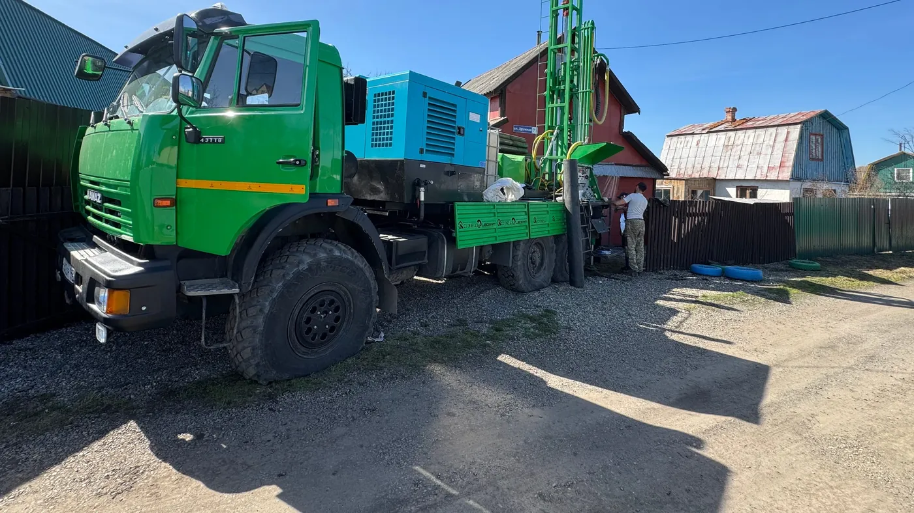
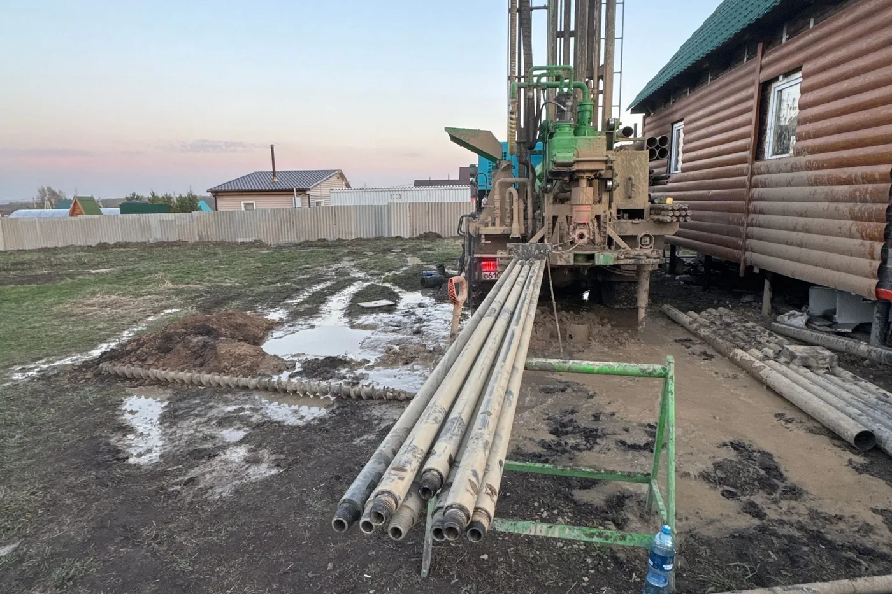
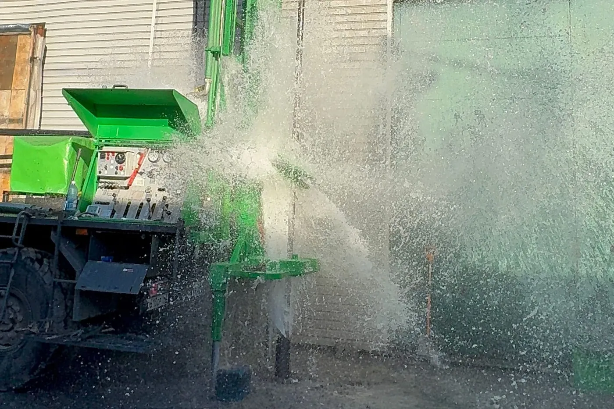

Этапы бурения скважины: от выезда до первой воды
Бурение скважины — это шесть этапов: выезд инженера, проходка, обсадка и фильтр, прокачка, опробование и паспорт. Что даёт каждый и чем грозит его пропуск.
Со стороны бурение выглядит просто: приехала машина, покрутила, пошла вода. На деле это шесть последовательных технологических этапов, и пропуск любого из них редко виден сразу — он проявляется через год-два, когда скважина начинает мутнеть, терять дебит или насос выходит из строя раньше срока. Разбираем каждый этап, что за ним стоит технически и чем оборачивается, если его сократить.
Понимание этой последовательности пригождается и раньше, чем начнутся работы: по ней удобно сверять, что именно предлагает подрядчик в смете, — если какой-то из шести пунктов в описании услуги отсутствует, это повод спросить, куда он делся.
Выезд инженера и выбор площадки

Первый выезд решает больше, чем кажется. Инженер оценивает подъезд для техники — основная установка УРБ-2Д3 стоит на базе КАМАЗа-вездехода, и ей нужен нормальный заезд (что эта установка может и на что не стоит рассчитывать по одной цифре из рекламы — в статье УРБ-2Д3 на КамАЗе: что установка может и чего нет); если двор застроен или ворота узкие, в работу идёт малогабаритная установка, которая проходит там, где тяжёлая техника не пройдёт. На этом же выезде решают, где физически встанет буровая: нужна ровная площадка под опоры мачты, разворот для подачи труб, место для отвода бурового раствора и породы. Точка на участке выбирается с учётом рельефа, положения дома и хозяйственных построек, а также подъезда, который понадобится позже — для обслуживания скважины и монтажа обвязки.
Если этот этап смазать — например, выбрать точку без учёта рельефа или будущего подъезда для обслуживания — сама скважина может получиться рабочей, а вот подъехать к ней потом для ремонта или замены насоса окажется неудобно или вовсе невозможно без демонтажа построек рядом.
Проходка с контролем геологического разреза
Это стадия, на которой формируется вся дальнейшая конструкция. По СП 31.13330.2021 (п. 8.4) в проекте скважины должны быть определены способ бурения, конструкция, глубина, диаметры колонн, тип водоприёмной части и оголовка — и всё это опирается не на усреднённые данные по району, а на фактический разрез, который открывается по мере проходки конкретной скважины.
Компания работает роторным способом — это её основная технология для участков с обычным подъездом и сложными породами; отличия от ударно-канатного бурения и то, для каких пород какой метод эффективнее, — тема отдельного разбора: роторное и ударно-канатное бурение. Здесь же, в процессе проходки, инженер фиксирует смену пород по глубине: где кончается один слой и начинается следующий, на какой глубине показался водоносный горизонт, какой он мощности. Эта запись — геологический разрез конкретной скважины, а не усреднённая справка по району, и на ней держатся два следующих этапа: без неё невозможно правильно разместить фильтр и определить, докуда доводить обсадную колонну.
Юг Кузбасса геологически неоднороден, и то, что показал разрез на одном участке, необязательно повторится в соседнем дворе. Именно поэтому глубина, названная по телефону до выезда, — это ориентир, а не гарантия: окончательное решение принимается по факту того, что показала проходка.
Пропуск контроля разреза — самая дорогая ошибка из всех. Конструкцию тогда подгоняют под усреднённые ожидания по району, а не под то, что реально показал грунт на этом участке. Итог виден не сразу: скважина может дать воду, но фильтр окажется установлен не на той глубине, а часть неустойчивой породы — не перекрыта колонной как следует. Расплата приходит позже — падением дебита или выносом песка, когда переделывать уже дороже, чем сделать правильно с первого раза.
Монтаж обсадной колонны и установка фильтра

Обсадная колонна подбирается под разрез конкретного участкаОбсадная колонна крепит стенки ствола, а фильтр — рабочий узел, через который вода поступает в скважину. По СП 31.13330.2021 фильтры устанавливаются в рыхлых и неустойчивых породах (п. 8.14), их сетка должна быть из коррозионностойкого материала заводского изготовления, а конечный диаметр обсадной трубы — больше наружного диаметра фильтра не менее чем на 50 мм при ударном бурении и не менее чем на 100 мм при роторном без крепления стенок (п. 8.16). Верхняя часть надфильтровой трубы должна выступать выше башмака обсадной колонны не менее чем на 3 м при глубине скважины до 50 м и не менее чем на 5 м при большей глубине (п. 8.20), а длина отстойника под фильтром — не менее 2 м (п. 8.21): туда должна уходить взвесь, которая иначе полетит прямиком в насос.
Последовательность монтажа тоже имеет значение: колонну опускают по мере проходки в неустойчивых породах, чтобы стенки ствола не успели обрушиться до крепления, а фильтр и надфильтровую трубу собирают отдельно и опускают внутрь колонны уже после того, как разрез подтвердил границы водоносного пласта. Рабочую часть фильтра ставят с отступом от кровли и подошвы пласта не менее 0,5–1 м (п. 8.18): вплотную к границе её не подводят, чтобы не забирать воду с приграничной, более заиленной зоны. Если по пути встретилось несколько водоносных прослоев, рабочие части фильтра устанавливают в каждом из них и разделяют глухими трубами, которые перекрывают слабоводопроницаемые промежутки (п. 8.19) — иначе горизонты будут перетекать друг в друга внутри самой скважины, а не отдавать воду наружу.
Здесь пропуск последствий не прощает: неверно подобранная скважность сетки фильтра оборачивается либо постоянным выносом песка, либо, наоборот, быстрым заиливанием и падением дебита. Обе проблемы дорого чинить постфактум — дешевле не допустить на этапе монтажа.
Прокачка и разглинизация

Прокачка до чистой воды входит в работу и не считается отдельноПосле установки фильтра скважину прокачивают, а при роторном бурении с глинистым раствором — разглинизируют до полного осветления воды (СП 31.13330.2021, п. 8.23). Технически это откачка мощным насосом или компрессором в режиме, который вымывает из прифильтровой зоны частицы раствора и мелкую фракцию породы, — до тех пор, пока вода не пойдёт устойчиво прозрачной. Со стороны это выглядит эффектно: из устья бьёт мощная струя, и в первые минуты вода идёт мутной, а затем чистой. Но смысл этапа не в зрелищности, а в том, что необработанный ствол так и останется «зажат» частицами бурового раствора и мелкой фракции породы — и скважина будет давать воду не в полную силу, на которую способен вскрытый горизонт.
Что именно происходит на этой стадии и почему её нельзя сократить — подробно разбираем в статье про освоение скважины после бурения. Здесь достаточно понимать: прокачка входит в работу и не считается отдельно, и торопить её — значит платить за скважину, которая с первого дня работает не на полную мощность.
Опробование откачкой и замер дебита
Финальная техническая проверка — опробование откачками, которое подтверждает фактическое соответствие дебита скважины тому, что показала проходка (СП 31.13330.2021, п. 8.24). На практике это пробная откачка с замером понижения уровня воды и объёма, который скважина отдаёт за единицу времени, — так дебит переходит из предположения по геологии в измеренную величину. Именно эта цифра, а не глубина сама по себе, определяет, какой насос и режим работы подойдут скважине дальше — без замера дебита подбор оборудования превращается в гадание: слишком мощный насос уйдёт в сухой ход и быстрее выработает ресурс, слишком слабый — не обеспечит нужный напор.
Оформление паспорта
Завершает цикл паспорт скважины — документ, в котором зафиксированы конструкция, глубина, вскрытые горизонты и замеренный дебит. Вместе с договором и актом выполненных работ это стандартный комплект документов по итогу бурения. Паспорт нужен не для галочки: по нему в будущем обслуживают скважину, разбираются в причинах, если дебит вдруг снизится, и опираются на его данные при продаже участка — новому владельцу не приходится верить на слово, откуда взялась цифра глубины. Скважина без паспорта — источник воды, о котором через несколько лет никто толком ничего не скажет: ни какой горизонт вскрыт, ни какой дебит был на момент сдачи, ни из чего собрана конструкция.
Продолжительность всего цикла — от выезда до отчёта — на практике компании укладывается в один-два дня: неглубокая скважина в несложных породах проходится за один выход бригады, а большая глубина или сложный разрез добавляют время на промежуточные этапы, прежде всего на проходку и разглинизацию. Это практика конкретного подрядчика, а не норматив — у другой бригады и другой техники сроки будут своими.
На этом цикл бурения заканчивается, но не заканчивается путь воды до крана — дальше идёт обвязка: кессон или адаптер, насос, автоматика, разводка по дому. Что входит в этот следующий этап и сколько он добавляет к бюджету, разобрано в статье об обустройстве скважины. А если состав самого бурения хочется свериться с тем, что обычно продают «под ключ», — это отдельный разбор: что входит в бурение под ключ.
Если на участке ещё предстоит бурение скважины на воду — при выезде инженер расскажет, как именно эти шесть этапов пройдут на конкретном рельефе и грунте.